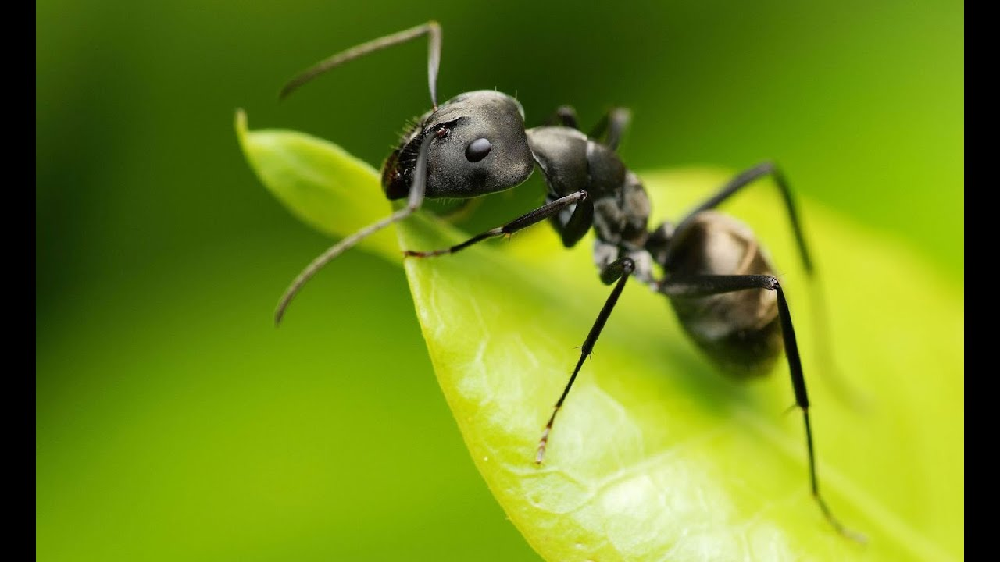
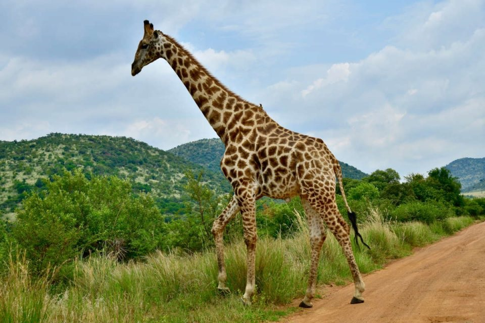
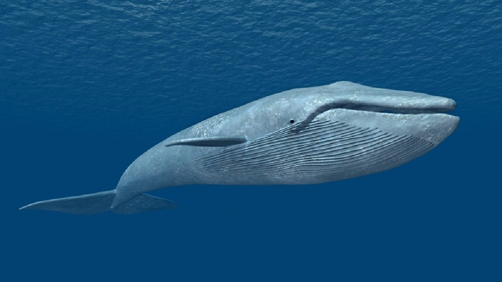
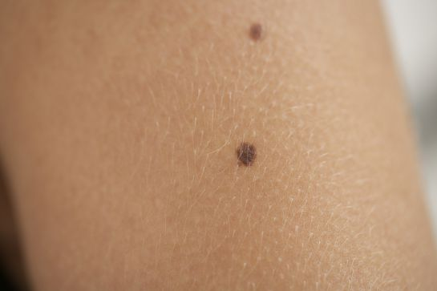
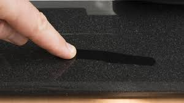

Hola curiosos
Las hormigas pueden almacenar agua

Cierta variedad de hormigas puede hacer crecer su vientre hasta un centímetro para almacenar una mezcla
de agua y azúcar, llamada néctar, que les sirve de alimento.
Cuando les falta agua, el resto de las hormigas recurre a sus compañeras para tomar el líquido vital.
La lengua nunca descansa
La lengua se está moviendo todo el día. Se expande, se contrae, se aplana, se vuelve a contraer.
Al final del día, lo más probable es que la lengua haya hecho varios miles de movimientos.
Las jirafas no emiten ningún sonido

Los perros ladran, los gatos maúllan y los pájaros pían. ¿Qué hacen las jirafas?
Un grupo de investigadores austriacos, armados con más de mil horas de grabación de sonidos en zoológicos
se dio a la tarea de responder a esta pregunta y la respuesta es: nada.
Las jirafas no emiten sonido alguno convirtiéndose de esta manera en el único mamífero con esta característica.
Las ballezas azules las mas grandes del mundo

Una ballena azul puede medir hasta 33 metros de largo y algunas de sus arterias son tan anchas que un bebé podría gatear ahí
Lunares falsos "moda"

La gente usaba lunares falsos (o «parches de belleza») hechos de terciopelo, seda o piel de ratón en el siglo XVIII y los utilizaban para tapar imperfecciones en la piel, luego se puso de moda.
Del polvo de tu casa eres "Culpable"

El polvo que vemos frente al resplandor que entra por la ventana, así como el que se acumula en el suelo o sobre los muebles, está compuesto en un 90% por células muertas de nuestro cuerpo.
La miel no se pudre
Al menos, las abejas no hacen todo ese trabajo para nada. Todos los alimentos, incluso los que se llaman “no perecederos”, se terminan poniendo en mal estado eventualmente. La miel es, de hecho, el único alimento que nunca lo hace.